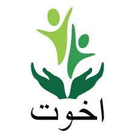
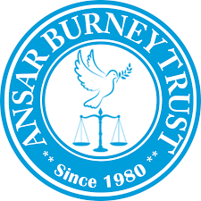

No 1 : SAYLANI WELFARE TRUST

Saylani
Trust has been operational since 1999; since then, the organization
has provided relief to thousands of people through its services. The
trust has an active dastarkhwan campaign as well as an RO plant
installation campaign to provide the most basic necessity to the
needy. Their education services provide education facilities to
180,000 students annually.
Adress : Head Office: Grappetite Chowrangi, Bahadurabad.
Contact: (021) 111 729 526
No 2 : EDHI FOUNDATION

The
Edhi Foundation is a non-profit social welfare organization based in
Pakistan. It was founded by Abdul Sattar Edhi in 1951, who served as
the head of the organization until his death on 8 July 2016. Bilquis
Edhi, a nurse by profession, used to oversee the maternity and
adoption services of the foundation.
Adress : Head Office:Sarafa Bazar, Boulton Market,Mithadar,
Karachi.
Contact: +92 (21) 32413232
No 3 : AKHUWAT FOUNDATION.

AKHUWAT
FOUNDATION has been operational since 1999; since then, the
organization has provided relief to thousands of people through its
services. The trust has an active dastarkhwan campaign as well as an
RO plant installation campaign to provide the most basic necessity
to the needy. Their education services provide education facilities
to students annually.
Address: 19 Civic Center, Sector A2, Township, Lahore, Pakistan
Contact: 042–111-448-464
No 4: DAR-UL-SUKUN
Dar-ul-Sukun
originated as a home for the abandoned children with disabilities.
It was founded on 17th February 1969 by a Dutch nun, Sr. Gertrude
Lemmens who came to Pakistan as a visitor in her full youth. She was
so much touched by the pathetic condition of children with
disabilities, who were found on street corners and rescued from the
garbage dump in city. In Pakistan, she devoted her life for the care
police and relatives. Her selfless love and affection turned it into
a glaring reality, Dar ul Sukun came into being.
Adress : Head Office: 159/H/3 Kashmir Road, PECHS Karachi, Pakistan.
Contact: +92 337 7778586
No 5 : Ansar Burney Trust

Mr.
Ansar Burney Chairman of ABTI developed the concept of having a
Trust to safeguard the rights of prisoners while he was himself
being transferred into different jails of Pakistan. Mr. Ansar
Burney’s was a prominent student leader with People’s Student
Federation. It was during these times (at age 20) that he was
arrested to give pro-democracy speech against Martial Law. He was
jailed thrice from 1978 to 1980 and for different durations under
false allegations (as a Student Leader).
Adress : 6-Hassan Manzil, Arambagh Road, Karachi, Pakistan.
Contact:92 21 34120146 / 47